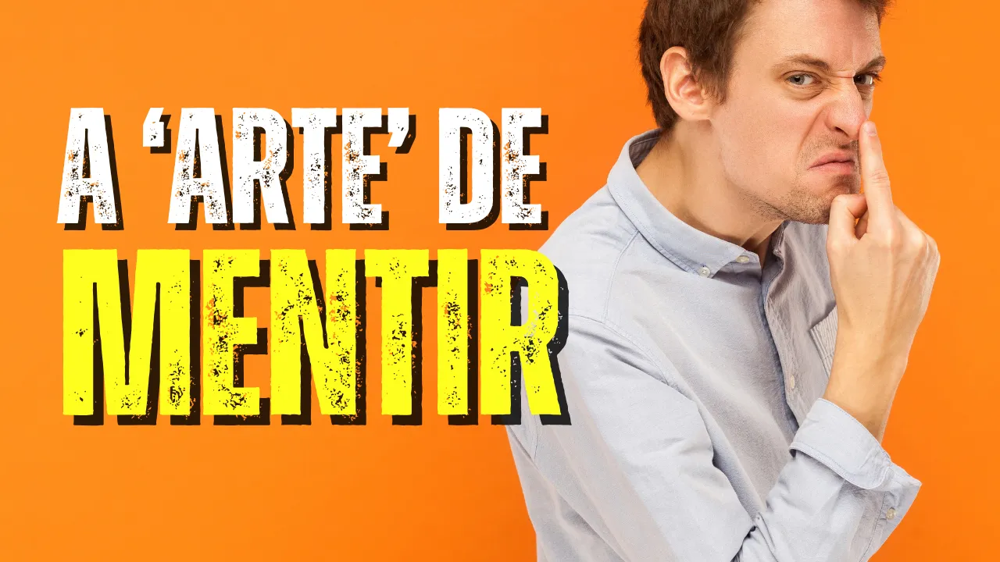

Pseudologia: A Ciência do Entretenimento e o Controle da Mente
Introdução
O documentário explora como a indústria da mídia e do entretenimento utiliza descobertas da neurociência, psicologia e hipnose para contornar a vontade humana, moldar comportamentos e alterar sistemas de crenças. O que chamamos de "apenas entretenimento" revela-se uma ferramenta sofisticada de programação mental.
1. O Impacto Fisiológico: O Cérebro em Modo Passivo
A exposição à televisão e ao conteúdo digital não é inócua; ela altera a química e a estrutura cerebral, especialmente em mentes em desenvolvimento.
- A Hipótese da Hiperestimulação: O Dr. Dimitri Christakis demonstra que sequências rápidas de imagens (como em DVDs para bebês) precondicionam a mente a esperar níveis irreais de estímulo. Isso resulta em déficits de atenção, pois a realidade comum torna-se "tediosa" [00:10:12].
- Ondas Alfa e Sugestionabilidade: Em menos de 60 segundos de exposição à TV, o cérebro migra do estado Beta (pensamento lógico e crítico) para o estado Alfa (relaxamento profundo e passividade). Neste estado, a mente torna-se altamente vulnerável a sugestões externas [00:18:17].
2. O Lóbulo Frontal: O "Córtex Inativado"
O lóbulo frontal é o centro de comando do cérebro, responsável pela moralidade, espiritualidade e tomada de decisões.
- Bloqueio Analítico: Estudos de ressonância magnética mostram que o entretenimento imersivo (especialmente filmes 3D e cenas de ação rápida) inativa o córtex pré-frontal. Isso explica por que as pessoas "se perdem" no filme e aceitam conceitos que normalmente rejeitariam [00:24:56].
- Reação Límbica: Enquanto o lóbulo frontal (filtro da realidade) é suprimido, o sistema límbico (emoções) assume o controle. O cérebro não consegue distinguir entre uma ameaça real e uma cena de filme, liberando hormônios de estresse e dopamina como se a experiência fosse física [00:26:49].
3. Marketing e Neuromarketing: A Venda pela Emoção
A publicidade evoluiu de uma comunicação baseada em necessidades para uma cultura baseada em desejos e impulsos subconscientes.
- A Herança de Edward Bernays: O sobrinho de Freud aplicou a psicologia das massas para ligar produtos a sentimentos de status e desejo, mudando o foco da "utilidade" para a "emoção" [00:31:46].
- Manipulação Química (Ocitocina): Anunciantes usam gatilhos emocionais (como bebês ou filhotes) para estimular a liberação de ocitocina, o hormônio da confiança, fazendo com que o consumidor se sinta "unido" à marca ou mensagem [00:41:26].
- Propaganda Subliminar: O documentário prova, através de experimentos com fumantes, que imagens sem logotipos (apenas o contexto visual) podem ser mais poderosas do que a publicidade direta, ativando desejos latentes sem que a pessoa perceba [00:53:14].
4. Neurocinema e Programação Espiritual
Hollywood utiliza tecnologia de ponta para garantir que a mensagem do filme seja "implantada" no subconsciente dos espectadores.
- Abertura de Ciclos e Amnésia: Técnicas de hipnose e PNL (Programação Neurolinguística) são usadas nos roteiros para criar confusão mental e "abrir ciclos" narrativos. Isso sobrecarrega o sistema crítico do cérebro, permitindo que ideias filosóficas ou religiosas sejam inseridas sem resistência [01:13:57].
- Gnosticismo e Inversão de Valores: Filmes como Inception (A Origem) e Avatar são citados como exemplos de produções que utilizam técnicas hipnóticas para promover visões de mundo gnósticas ou críticas ao caráter de Deus, muitas vezes sem que o público religioso perceba a mensagem subliminar [01:16:10].
- A Regra da Contemplação: O princípio de que "pela contemplação somos transformados" é a chave final. O que assistimos repetidamente molda quem nos tornamos [01:19:46].
Conclusão: A Batalha pela Mente
O documentário encerra com um alerta: se o lóbulo frontal — o lugar onde Deus se comunica com o homem — está sendo sistematicamente "desligado" pela mídia, a humanidade está perdendo sua capacidade de discernimento espiritual.
A escolha do entretenimento não é apenas uma questão de lazer, mas uma decisão sobre quem terá permissão para programar o nosso caráter. A recomendação final baseia-se em Filipenses 4:8: ocupar a mente com o que é verdadeiro, puro e justo para restaurar a saúde mental e a conexão com o Criador [01:20:43].
Assista ao vídeo completo no canal Terceiro Anjo

👉 ...
- Essencialista